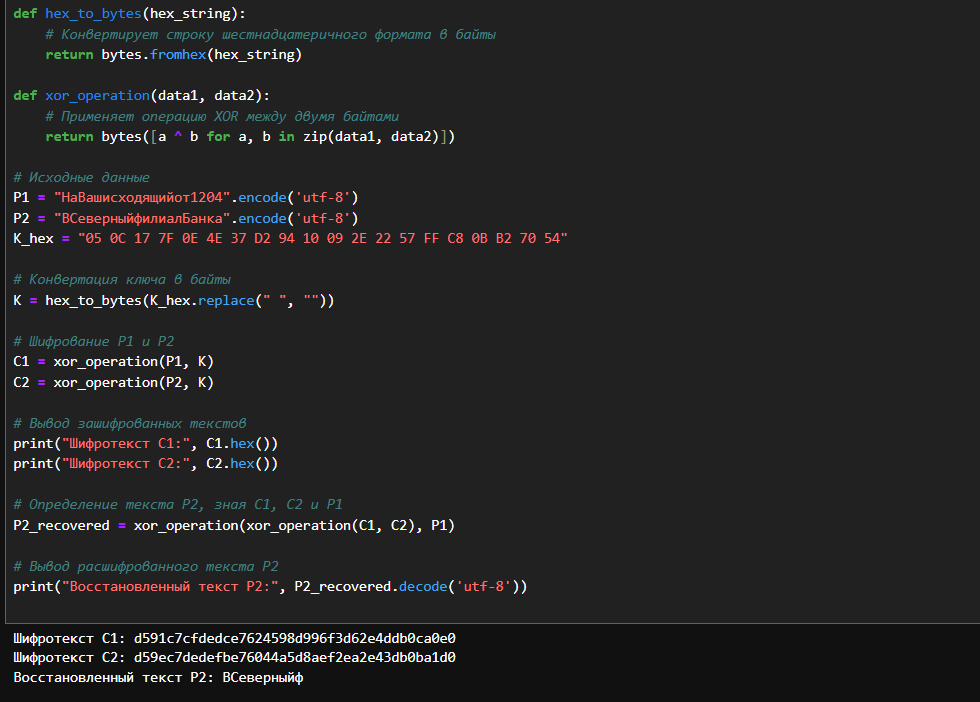
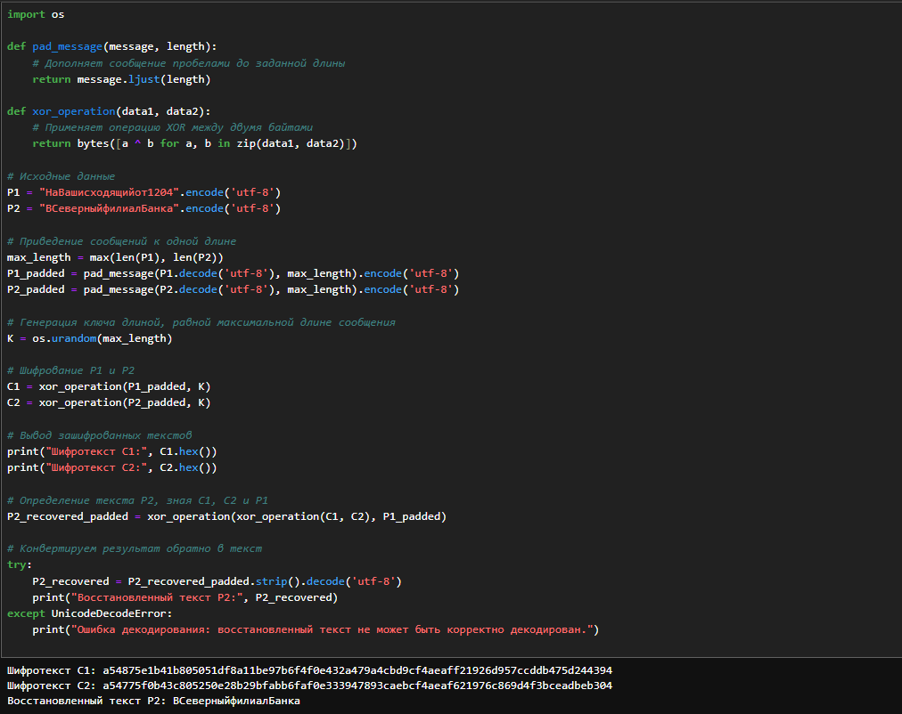

Информационная безопасность
Акондзо Жордани Лади Гаэл.
Российский университет дружбы народов, Москва, Россия
26 Октября 2024
Цель данной лабораторной работы — исследование метода шифрования с использованием одной ключевой гаммы для двух сообщений. Основной акцент делается на изучении уязвимостей, связанных с повторным использованием одной и той же ключевой гаммы, а также на рассмотрении методов, позволяющих избежать этих уязвимостей. В ходе лабораторной работы рассматриваются два варианта шифрования и анализируются причины, по которым один из них оказался неудачным.
Шифрование с использованием гаммы или гаммирование — это метод симметричного шифрования, где открытый текст преобразуется с помощью ключа и операции XOR (исключающее ИЛИ). Такой подход позволяет достичь высокой степени безопасности, при условии, что ключ имеет достаточную длину и используется только один раз.
Метод гаммирования обладает следующими свойствами:
Операция XOR выполняется побитно между каждым символом открытого текста и ключа.
Уникальность ключа — ключ должен использоваться только для одного сообщения, чтобы обеспечить стойкость шифра.
Длина ключа должна совпадать с длиной сообщения, чтобы избежать утечки информации.
Если ключ используется повторно для нескольких сообщений, возникает риск компрометации, так как злоумышленник может восстановить одно из сообщений, если ему известен другой текст или его часть.
GitHub для работы с репозиториямиVirtualBoxpandoc для входного формата MarkdownpdfdocxMakefileНа начальном этапе лабораторной работы был проведен эксперимент с шифрованием двух сообщений с использованием одного ключа длиной 20 байт. Исходные данные были следующими:
Сообщение P1: «НаВашисходящийот1204»
Сообщение P2: «ВСеверныйфилиалБанка»
Ключ K:
05 0C 17 7F 0E 4E 37 D2 94 10 09 2E 22 57 FF C8 0B B2 70 54
(20 байт)

import os
def pad_message(message, length):
# Дополняет сообщение пробелами до заданной длины
return message.ljust(length)
def xor_operation(data1, data2):
# Применяет операцию XOR между двумя байтами
return bytes([a ^ b for a, b in zip(data1, data2)])
# Исходные данные
P1 = "НаВашисходящийот1204".encode('utf-8')
P2 = "ВСеверныйфилиалБанка".encode('utf-8')
# Приведение сообщений к одной длине
max_length = max(len(P1), len(P2))
P1_padded = pad_message(P1.decode('utf-8'), max_length).encode('utf-8')
P2_padded = pad_message(P2.decode('utf-8'), max_length).encode('utf-8')
# Генерация ключа длиной, равной максимальной длине сообщения
K = os.urandom(max_length)
# Шифрование P1 и P2
C1 = xor_operation(P1_padded, K)
C2 = xor_operation(P2_padded, K)
# Вывод зашифрованных текстов
print("Шифротекст C1:", C1.hex())
print("Шифротекст C2:", C2.hex())
# Определение текста P2, зная C1, C2 и P1
P2_recovered_padded = xor_operation(xor_operation(C1, C2), P1_padded)
# Конвертируем результат обратно в текст
try:
P2_recovered = P2_recovered_padded.strip().decode('utf-8')
print("Восстановленный текст P2:", P2_recovered)
except UnicodeDecodeError:
print("Ошибка декодирования: восстановленный текст не может быть корректно декодирован.")
Шифротекст C1: d591c7cfdedce7624598d996f3d62e4ddb0ca0e0
Шифротекст C2: d59ec7dedefbe76044a5d8aef2ea2e43db0ba1d0
Восстановленный текст P2: ВСеверныйфДля исправления ошибки было принято решение сгенерировать новый ключ той же длины, что и наиболее длинное из сообщений. Также были дополнены оба сообщения до одинаковой длины, чтобы гарантировать корректное выполнение операции XOR. Были выполнены следующие шаги:
Приведение сообщений к одной длине: Оба сообщения были дополнены пробелами до одинаковой длины, чтобы обеспечить возможность корректного шифрования.
Генерация ключа: Ключ был сгенерирован случайным образом, с длиной, соответствующей длине сообщений. Это позволило гарантировать, что ключ будет достаточен для шифрования всех символов каждого сообщения.

import os
def pad_message(message, length):
# Дополняет сообщение пробелами до заданной длины
return message.ljust(length)
def xor_operation(data1, data2):
# Применяет операцию XOR между двумя байтами
return bytes([a ^ b for a, b in zip(data1, data2)])
# Исходные данные
P1 = "НаВашисходящийот1204".encode('utf-8')
P2 = "ВСеверныйфилиалБанка".encode('utf-8')
# Приведение сообщений к одной длине
max_length = max(len(P1), len(P2))
P1_padded = pad_message(P1.decode('utf-8'), max_length).encode('utf-8')
P2_padded = pad_message(P2.decode('utf-8'), max_length).encode('utf-8')
# Генерация ключа длиной, равной максимальной длине сообщения
K = os.urandom(max_length)
# Шифрование P1 и P2
C1 = xor_operation(P1_padded, K)
C2 = xor_operation(P2_padded, K)
# Вывод зашифрованных текстов
print("Шифротекст C1:", C1.hex())
print("Шифротекст C2:", C2.hex())
# Определение текста P2, зная C1, C2 и P1
P2_recovered_padded = xor_operation(xor_operation(C1, C2), P1_padded)
# Конвертируем результат обратно в текст
try:
P2_recovered = P2_recovered_padded.strip().decode('utf-8')
print("Восстановленный текст P2:", P2_recovered)
except UnicodeDecodeError:
print("Ошибка декодирования: восстановленный текст не может быть корректно декодирован.")
Шифротекст C1: a54875e1b41b805051df8a11be97b6f4f0e432a479a4cbd9cf4aeaff21926d957ccddb475d244394
Шифротекст C2: a54775f0b43c805250e28b29bfabb6faf0e333947893caebcf4aeaf621976c869d4f3bceadbeb304
Восстановленный текст P2: ВСеверныйфилиалБанка1. Анализ первого случая
Ошибка использования короткого ключа показала, что длина ключа является критически важным фактором для корректного шифрования и дешифрования.
Риск повторного использования ключа: если ключ используется повторно для шифрования нескольких сообщений, это делает систему уязвимой к атакам, так как злоумышленник может использовать свойства XOR для восстановления оригинальных сообщений.
2. Исправленный подход
Генерация ключа достаточной длины и приведение сообщений к одинаковой длине позволили обеспечить безопасность и корректность процесса шифрования и дешифрования.
Использование уникального ключа для каждого сообщения предотвращает возможность компрометации данных и повышает общую безопасность системы.
Данная лабораторная работа продемонстрировала важность правильного выбора длины ключа и необходимость избегать повторного использования ключей при шифровании нескольких сообщений. В первом эксперименте ошибка, связанная с коротким ключом, привела к невозможности корректного восстановления сообщения, в то время как исправленный подход с генерацией нового ключа обеспечил успешное шифрование и дешифрование.
В криптографии безопасность во многом зависит от правильного выбора параметров, таких как длина ключа, уникальность и надежность генерации. Результаты лабораторной работы подчеркивают необходимость соблюдения этих принципов для предотвращения уязвимостей и обеспечения надежной защиты данных.
1. Как, зная один из текстов (P1 или P2), определить другой,
не зная при этом ключа? * Можно воспользоваться свойством
операции XOR: если известны оба шифротекста (C1 и C2) и
один из открытых текстов (P1), то можно вычислить второй
текст (P2) с помощью операции XOR:
P2 = C1 ⊕ C2 ⊕ P1.
2. Что будет при повторном использовании ключа при шифровании текста?
3. Как реализуется режим шифрования однократного гаммирования одним ключом двух открытых текстов?
4. Перечислите недостатки шифрования одним ключом двух открытых текстов.
5. Перечислите преимущества шифрования одним ключом двух открытых текстов.